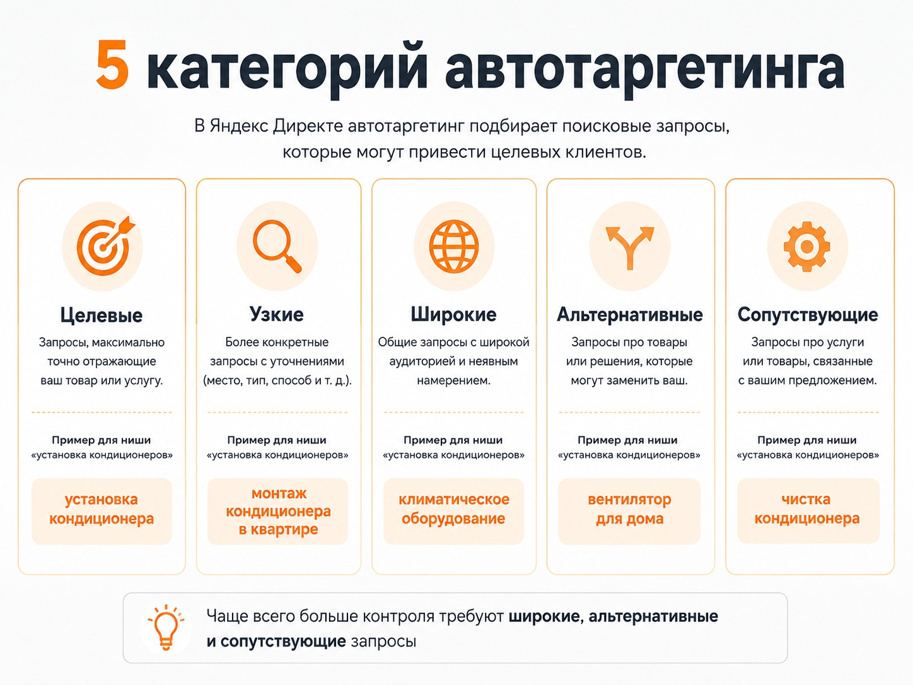
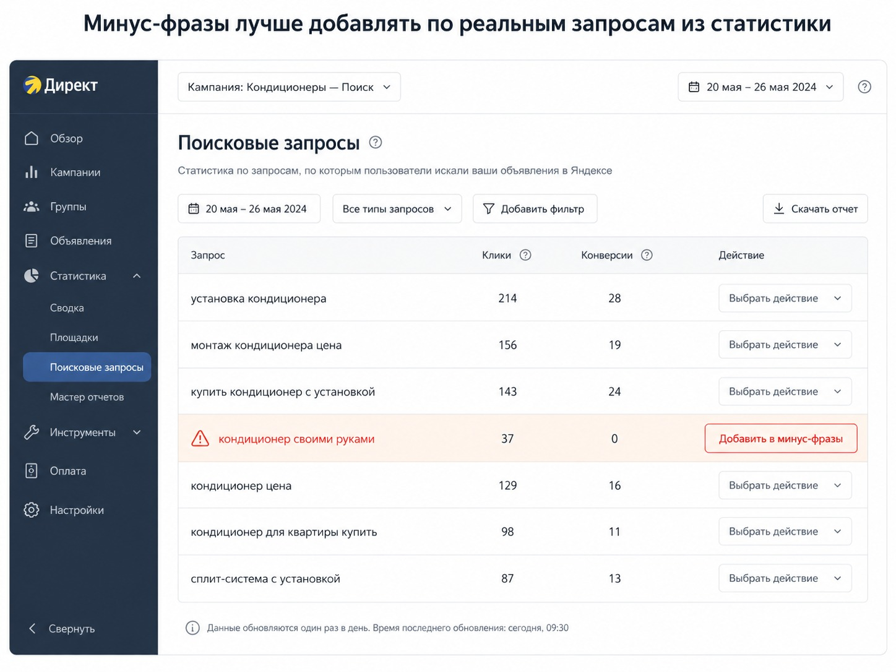
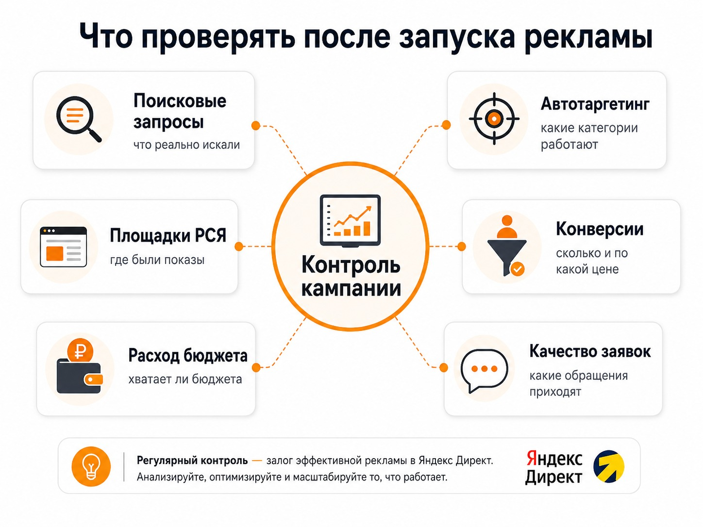

Блог о платном трафике
Как настроить рекламу в Яндекс Директ в 2026 году
Если вы хотите настроить рекламу в Яндекс Директ с нуля, не стоит начинать с десятков отдельных кампаний, огромного списка ключевых фраз и ручного управления ставками. В 2026 году значительную часть работы выполняют алгоритмы Директа.
Задача рекламодателя сместилась в сторону правильной настройки целей, ограничений, автотаргетинга и последующего анализа трафика. Автоматизация не означает, что кампанию можно запустить и забыть: особенно внимательно нужно следить за тем, какую аудиторию находят алгоритмы.
Что нужно подготовить до настройки рекламы
До создания кампании я рекомендую проверить четыре вещи:
- Посадочная страница соответствует рекламируемой услуге или товару.
- На сайте установлена Яндекс Метрика.
- Настроены реальные цели бизнеса: отправка формы, звонок, заказ, покупка или другое полезное действие.
- Вы понимаете, какое действие будет основной конверсией для алгоритма.
Это критично именно из-за автоматизации. Если выбрать неправильную цель, Директ будет вполне успешно оптимизироваться под нее, но результат для бизнеса окажется бесполезным. Например, не стоит выбирать просмотр страницы основной целью, если на сайте регулярно происходят реальные отправки формы.
Для подготовки аналитики пригодятся инструкции: как настроить цели Яндекс Метрики и как проверить работу цели в Яндекс Метрике.
С чего начинать: поиск или РСЯ
Поиск работает с уже сформированным спросом: человек вводит запрос и видит рекламное предложение в результатах поиска. РСЯ работает иначе - объявления показываются на сайтах и сервисах рекламной сети с учетом интересов пользователя, его поведения и других сигналов.
Заранее далеко не всегда можно определить, какой источник окажется эффективнее для конкретного бизнеса. Поэтому для первого теста можно начать с Мастера кампаний: он одновременно размещает рекламу в поиске, РСЯ и Яндекс Картах, а алгоритм распределяет показы. Внутри Мастера разделить поиск и РСЯ на две части нельзя.
Такой запуск дает реальные данные о заявках, их стоимости и качестве. После этого уже можно строить более детальную структуру в режиме эксперта.

Как настроить первую кампанию
1. Создайте кампанию
В рекламном кабинете нажмите добавление новой кампании и выберите Мастер кампаний. Для сайта обычно подойдет сценарий, ориентированный на конверсии и трафик. Укажите страницу, на которую хотите приводить пользователей: если человек ищет конкретную услугу, вести его лучше сразу на эту страницу, а не на главную.
2. Проверьте данные организации
Директ может подтянуть информацию из Яндекс Бизнеса. Проверьте название компании, телефон и карточку организации. Если продвижение в Картах не требуется, отдельно проверьте настройки этого размещения.
3. Подготовьте несколько вариантов объявлений
Добавьте разные варианты заголовков, текстов, изображений, преимуществ и призывов к действию. Разница должна быть содержательной: алгоритму нужны действительно разные рекламные сообщения, чтобы определить работающие.
В ЕПК Директ составляет варианты рекламы из нескольких заголовков, текстов, изображений и видео. Поэтому важнее подготовить качественный набор материалов, а не пять почти одинаковых заголовков.
Автотаргетинг - одна из главных настроек Директа
Автотаргетинг позволяет Директу подобрать аудиторию без прямой привязки к заданной рекламодателем ключевой фразе. На поиске система анализирует запрос, объявление и посадочную страницу, в сетях - интересы пользователя и тематику площадки.
Это не небольшое дополнение к ключевым словам. Автотаргетинг способен приводить значительную часть трафика, поэтому его нужно регулярно анализировать.
Пять категорий автотаргетинга
| Категория | Что означает |
|---|---|
| Целевые | Предложение напрямую соответствует тому, что ищет пользователь. |
| Узкие | Пользователь ищет более конкретный вариант продукта или услуги. |
| Широкие | Запрос относится к общей категории, куда входит ваше предложение. |
| Альтернативные | Пользователь ищет другой продукт, который потенциально можно заменить вашим. |
| Сопутствующие | Пользователь ищет связанный товар или услугу. |
На широких, альтернативных и сопутствующих запросах особенно легко получить формально связанный с тематикой, но плохо конвертирующийся трафик. Для бизнеса с четким спросом я сначала смотрю на целевые и узкие запросы, а остальные категории расширяю или ограничиваю по статистике.

Нужны ли теперь ключевые фразы
Ключевые фразы по-прежнему нужны. Но подход «собрать несколько тысяч запросов, максимально раздробить их и вручную управлять каждой группой» постепенно теряет смысл.
Алгоритм получает сигналы из ключевых и тематических фраз, содержания объявления, посадочной страницы, настроенных целей, накопленных конверсий и автотаргетинга. Семантику лучше использовать, чтобы объяснить системе нужный спрос, а не пытаться перечислить все варианты человеческих формулировок.
Как работать с минус-фразами
Автоматизация не отменила минус-фразы. До запуска стоит убрать очевидно нецелевой спрос: например, «б/у», «бесплатно», «ремонт» или «своими руками» - если они не соответствуют предложению.
Основной этап минусации начинается после запуска. В отчете по поисковым запросам нерелевантные формулировки можно добавить в минус-фразы на уровне группы или кампании.
- Смотрю, по каким запросам были показы и переходы.
- Определяю явно нецелевые формулировки.
- Проверяю, не исключит ли минус-фраза полезный спрос.
- Только после этого добавляю ее.
Слишком агрессивная минусация тоже вредна: можно настолько сузить аудиторию, что алгоритму не хватит данных.

Какую стратегию показов выбрать
Ручное назначение ставок до сих пор существует, но я бы не использовал его как стандартный вариант запуска. Для обычного бизнеса есть два базовых сценария.
Если на сайте достаточно конверсий
Используйте оптимизацию на конверсии. Директ будет искать пользователей, которые с большей вероятностью выполнят выбранное действие. Бюджет должен давать алгоритму достаточно данных для обучения: Яндекс рекомендует ориентироваться на потенциальные 10-20 конверсий в неделю.
Чтобы оценивать стоимость результата, прочитайте что такое CPA в Яндекс Директе.
Если данных по конверсиям пока мало
Можно начать с максимизации кликов с ограничением стоимости перехода и недельного бюджета. После появления стабильных конверсий переходят к оптимизации на целевые действия. Дешевые переходы сами по себе бизнесу ничего не дают - оценивайте стоимость и качество заявки.
Как определить бюджет
Универсальной суммы для первого запуска нет: влияют регион, конкуренция, стоимость клика, спрос, конверсия сайта и стратегия. Рассчитывайте бюджет от бизнес-цели: определите приемлемую стоимость заявки и число заявок, которое хотите получить за неделю. Это даст ориентир, какой объем целевых действий должен получить алгоритм.
Что проверять после запуска
Настройка рекламы не заканчивается нажатием кнопки запуска. После появления статистики проверяйте:
Поисковые запросы
Что действительно вводили пользователи: нецелевые запросы исключайте, полезные используйте для развития кампании.
Автотаргетинг
Сравнивайте категории. Если широкие или сопутствующие запросы стабильно расходуют деньги без результата, ограничивайте их.
Площадки РСЯ
В отчете по площадкам видно, где показывалась реклама. Неэффективные источники нужно анализировать и при необходимости ограничивать.
Конверсии, расход и качество заявок
Главные показатели - количество целевых действий, их стоимость и качество. CTR, цена клика и показы нужны для диагностики, но не определяют эффективность. Проверяйте скорость расхода бюджета и, если есть CRM или телефония, передавайте данные о реальном качестве обращений.

Не меняйте настройки каждый день
Алгоритмам нужно накопить статистику. Если ежедневно менять стратегию, бюджет, цели, таргетинги и объявления, оценить результат предыдущих настроек становится значительно сложнее. Изменения должны появляться из данных, а не из желания каждый день что-нибудь «оптимизировать».
Мастер кампаний или режим эксперта
Мастер кампаний удобен, когда нужно быстрее протестировать рекламу и понять, где находится результат. Режим эксперта и Единая перфоманс-кампания нужны, когда требуется точнее управлять структурой, таргетингами, местами показа и форматами.
Для нового проекта без накопленной статистики Мастер кампаний может стать хорошей точкой старта. После появления данных проще решить, нужна ли отдельная поисковая кампания, отдельная РСЯ или более сложная структура.
Частые ошибки при самостоятельной настройке
- Реклама запускается без настроенных целей Метрики.
- Все категории автотаргетинга оставляются без контроля.
- Минус-фразы добавляются один раз перед запуском и больше не обновляются.
- Кампанию оценивают по кликам вместо заявок и продаж.
- Объявления ведут на слишком общую страницу сайта.
- Настройки меняются раньше, чем набралось достаточно статистики.
FAQ
Можно ли самостоятельно настроить Яндекс Директ?
Да. Для первого запуска можно использовать Мастер кампаний, но после запуска все равно нужно анализировать поисковые запросы, цели, автотаргетинг, площадки и стоимость конверсий.
Что лучше - поиск или РСЯ?
Универсального ответа нет. При отсутствии статистики можно протестировать оба источника через Мастер кампаний и принять решение по результатам.
Можно ли полностью отключить автотаргетинг?
В Мастере кампаний полностью отключить его нельзя, но можно ограничивать категории. В ЕПК на поиске должна быть активна хотя бы одна категория.
Нужно ли собирать ключевые слова?
Да, но вручную собирать все возможные формулировки не требуется: ключевые фразы работают вместе с автотаргетингом и другими сигналами алгоритма.
Что выбрать - ручные ставки или автоматическую стратегию?
Для большинства запусков подходят автоматические стратегии. При достаточном объеме конверсий - оптимизация на целевые действия; при малом объеме данных - максимизация кликов с ограничением цены и бюджета.
Главное в настройке рекламы сегодня
Настройка Яндекс Директа сегодня - это управление алгоритмами. Нужно правильно настроить аналитику, дать системе понятную цель, выбрать стратегию, следить за автотаргетингом и поисковыми запросами и принимать решения по реальным конверсиям.
На практике это часть системной работы с рекламой: посмотрите, что входит в настройку и ведение кампаний, а результаты разных запусков - в кейсах по Яндекс Директу.